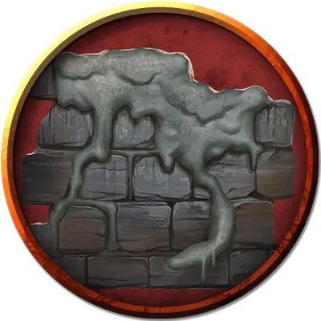

Огромная серая слизь
Huge Gray Ooze
Огромная Слизь, без мировоззрения

Класс Доспеха 8
Хиты 152 (16к12 + 48)
Скорость 10 футов, лазая 10 футов
| мод | спас | ||
|---|---|---|---|
| СИЛ | 18 | +4 | +4 |
| ЛОВ | 6 | −2 | −2 |
| ТЕЛ | 16 | +3 | +3 |
| мод | спас | ||
|---|---|---|---|
| ИНТ | 1 | −5 | −5 |
| МДР | 6 | −2 | −2 |
| ХАР | 2 | −4 | −4 |
Навыки Скрытность +2
Сопротивление урону кислота, огонь, холод
Иммунитет к состояниям сбивание с ног, очарование, ослепление, истощение, испуг, глухота
Чувства слепое зрение 60 футов (слеп за пределами этого радиуса), пассивное Восприятие 8
Опасность 8 (3900 опыта)
Бонус мастерства +3
Среда обитания Подземье
Особенности
Аморфный. Слизь может перемещаться сквозь пространство шириной в 1 дюйм без протискивания.
Разъедание металла. Любое немагическое оружие, изготовленное из металла, попадающее по слизи, начинает разъедаться. После причинения урона оружие получает постоянный накопительный штраф −1 к броскам урона. Если этот штраф дойдет до −5, оружие будет уничтожено. Немагические боеприпасы, изготовленные из металла или дерева, попадающие по слизи, уничтожаются после причинения урона.
Слизь может разъесть 2 дюйма немагического металла за 1 раунд.
Обманчивая внешность. Пока слизь остается без движения, она неотличима от маслянистой лужи или мокрого камня.
Психическая серая слизь. Серая слизь, прожившая достаточно долго, эволюционирует до более разумного состояния и развивает в себе ограниченные псионические способности. Чаще всего это происходит с серой слизью, живущей рядом с существами, обладающими псионическими способностями, такими как иллитиды, а это означает, что слизь чувствует и имитирует псионические способности.
Психическая серая слизь имеет Интеллект 6 (−2) и следующее дополнительное действие:
Психическое сдавливание (перезарядка 5–6). Слизь нацеливается на одно существо, которое чувствует в пределах 60 футов от себя. Цель должна совершить спасбросок Интеллекта Сл 10, получая урон психической энергией 10 (3к6) при провале или половину при успехе.
Действия
Мультиатака. Действием серая слизь совершает две атаки своими ложноножками.
Ложноножка. Рукопашная атака оружием: +3 к попаданию, досягаемость 5 футов, одна цель. Попадание: Дробящий урон 4 (1к6 + 1) плюс урон кислотой 7 (2к6), и если цель носит немагический металлический доспех, он частично растворяется и получает постоянный накопительный штраф −1 к КД, который он предлагает. Доспех уничтожается, если штраф уменьшает его КД до 10.
Увеличение (перезаряжается после короткого или продолжительного отдыха). На 1 минуту слизь магическим образом увеличивается в размере. Пока слизь увеличена, она является Громадного размера, удваивает кости урона при атаках ложноножками и совершает с преимуществом проверки Силы и основанные на Силе спасброски.
Невидимость (перезаряжается после короткого или продолжительного отдыха). Слизь магическим образом становится невидимой в течение 1 часа или пока он не атакует, наложит заклинание, использует своё «Увеличение» или потеряет концентрацию (как если бы он концентрировался на заклинании).
Описание
Серая слизь — это камень, ставший жидким из-за воздействия хаоса. Она движется как жидкая змея, приподнимаясь для атаки.
См. дополнительно статью: "Бестиарий: Слизь"